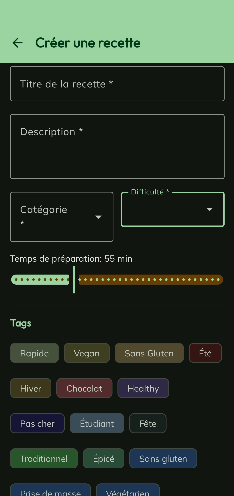
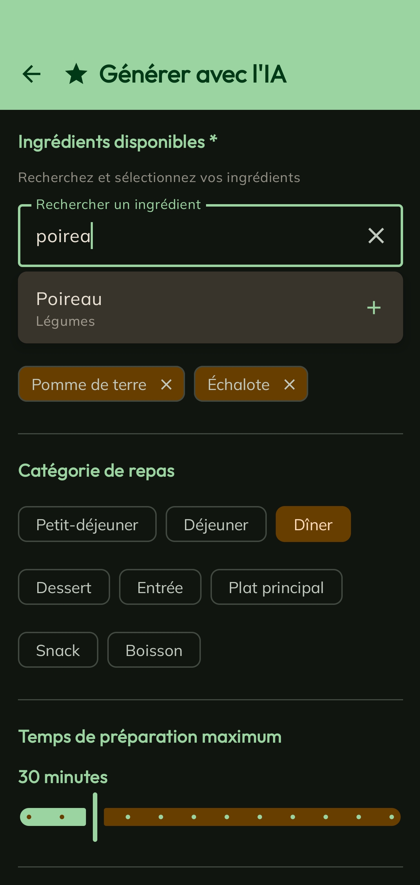
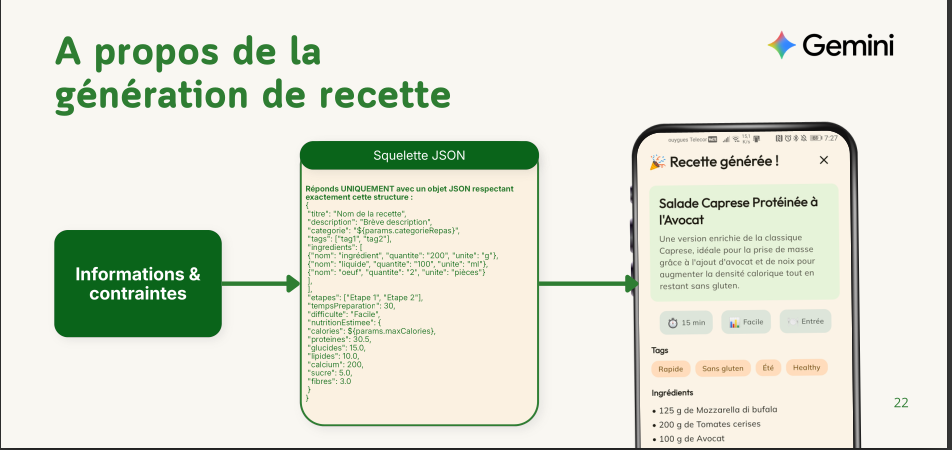
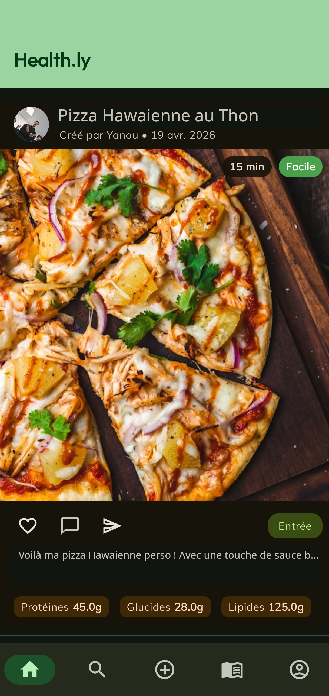
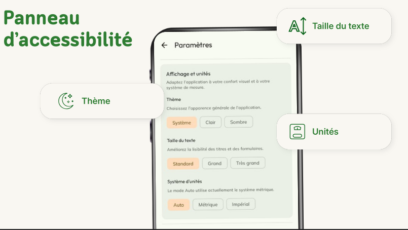

Une application mobile qui génère des recettes personnalisées grâce à l'IA Gemini, adaptées à vos contraintes nutritionnelles et préférences alimentaires.
Découvrir le projetHealth.ly est une application mobile complète de santé et nutrition, conçue pour simplifier la création et la découverte de recettes saines adaptées à chaque utilisateur. Elle est conçue comme un réseau social aux inspirations d'instagram
Les recettes sont générées à la volée par Gemini 2.5 Flash-Lite en réponse structurée JSON, garantissant des données et réponses exploitables et précises.
Les utilisateurs peuvent aussi créer leurs propres recettes avec un formulaire complet : titre, description, ingrédients, étapes, tags et difficulté.
Chaque recette affiche les macros (protéines, glucides, lipides, calories) calculées depuis la base CIQUAL officielle.
Panneau d'accessibilité intégré : thème clair/sombre/système, taille de texte ajustable, et choix du système d'unités.
Deux modes de création, un suivi nutritionnel complet et une expérience utilisateur soignée.
L'écran de création manuelle offre un formulaire guidé : titre, description, catégorie de repas, niveau de difficulté, temps de préparation via un slider, et une sélection de tags colorés (Vegan, Sans gluten, Rapide, Healthy, Étudiant…).
Les ingrédients et les étapes de préparation sont ajoutés dynamiquement, avec validation complète avant publication.

L'écran de génération IA permet à l'utilisateur de saisir les ingrédients disponibles, choisir la catégorie de repas (Petit-déjeuner, Déjeuner, Dîner, Dessert…), et définir un temps de préparation maximum.
L'application envoie ces contraintes à Gemini 2.5 Flash-Lite qui retourne une recette complète et structurée, prête à l'emploi.

Le prompt envoyé à Gemini inclut un squelette JSON strict. Le modèle répond uniquement avec un objet respectant cette structure, ce qui garantit une intégration directe dans l'application sans post-traitement.
Les paramètres utilisateur (catégorie, calories max…) sont interpolés dynamiquement dans le prompt avant l'envoi.

Un design sombre, moderne et axé user friendly et mode clair disponible.


Un stack moderne centré sur la performance mobile et l'intégration IA.
Langage Android natif pour le développement de l'application mobile
Framework Java/Kotlin pour le backend REST API
Modèle IA de Google pour la génération de recettes
Base officielle de données nutritionnelles française
Base de données relationnelle pour le stockage des recettes et utilisateurs
Réponses typées et validées depuis l'API Gemini
Une expérience sociale autour des recettes
Health.ly s'inspire des codes des réseaux sociaux et les combine à la nutrition
Liker, commenter, partager
Chaque recette publiée devient une publication sociale. Les utilisateurs peuvent interagir avec les recettes de la communauté de trois façons :
Liker une recette
Un tap sur le cœur permet d'aimer une publication et de l'enregistrer dans ses favoris(Vue Profil).
Commenter
Les utilisateurs peuvent laisser un commentaire sur n'importe quelle recette pour partager leur avis ou poser une question.
Partager
Une recette peut être partagée en dehors de l'application via le système de partage natif Android.